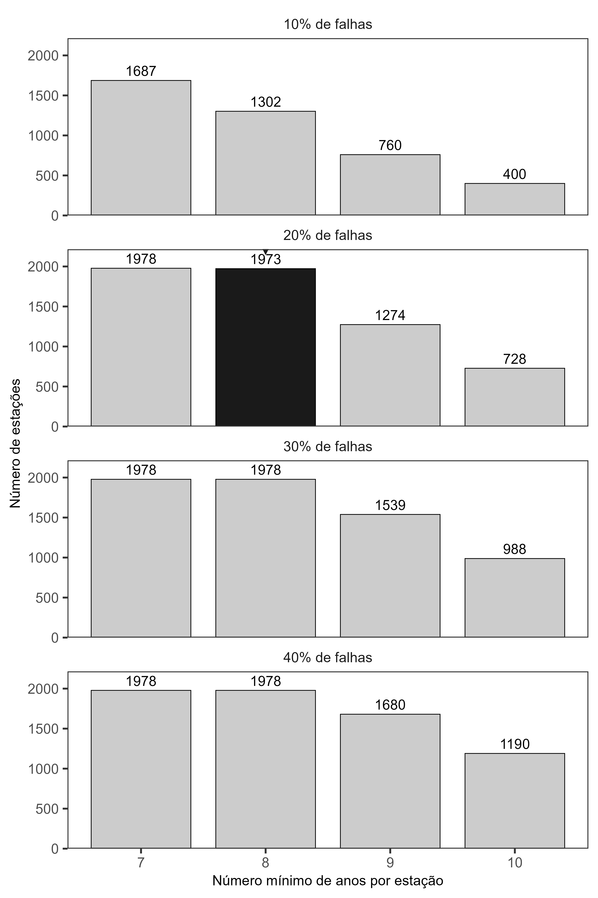
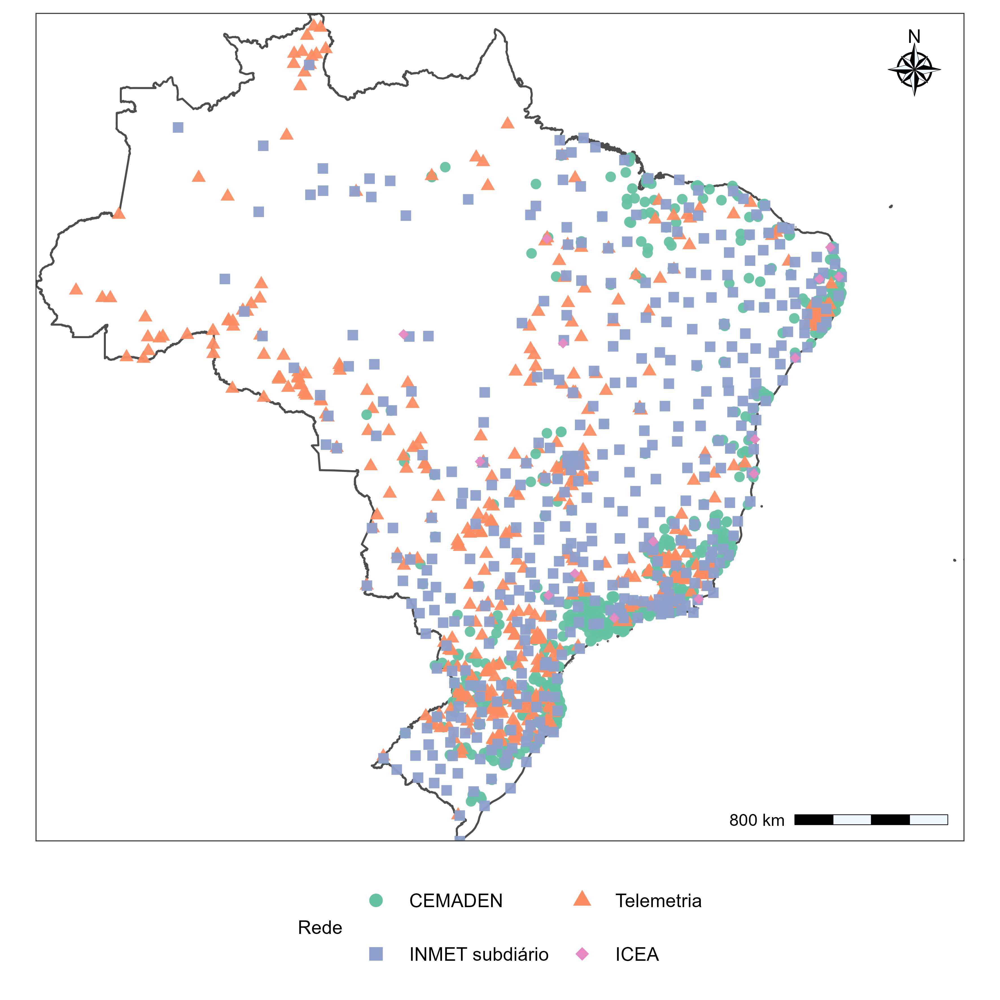
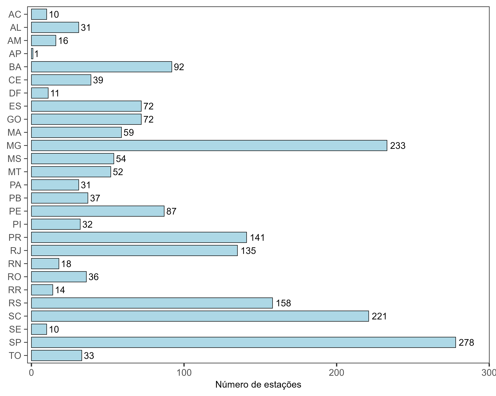

Controle de qualidade e seleção das séries subdiárias de precipitação
Metodologia
O controle de qualidade (QC) foi aplicado aos registros subdiários de precipitação da base UNIPLU-BR, abrangendo diferentes redes de monitoramento e resoluções temporais conforme os dados descritos na meta 3. Inicialmente, as estações foram avaliadas quanto à consistência dos metadados, à identificação da rede, à resolução temporal, à disponibilidade dos registros e à definição do mês inicial do ano hidrológico. Foram consideradas estações com resoluções inferiores a 24 horas, sendo excluídas do processamento automático aquelas com inconsistências cadastrais ou alterações de resolução não resolvidas. Posteriormente, os registros foram submetidos a verificações de integridade temporal e consistência pluviométrica, distinguindo observações inválidas de valores potencialmente extremos que exigiam avaliação adicional.
Verificações de consistência das observações
As precipitações foram interpretadas como lâminas incrementais, em milímetros por intervalo de aquisição, associadas a registros temporais em UTC. O procedimento distinguiu duas classes de sinalização: FAIL, para registros que não atendiam a requisitos mínimos de utilização, e SUSPECT, para observações potencialmente inconsistentes que não deveriam ser descartadas sem consideração de seu contexto. Uma observação pôde apresentar mais de uma sinalização.
Foram consideradas falhas impeditivas datas inválidas ou posteriores à referência temporal do processamento, precipitações ausentes, não finitas ou negativas, identificação inconsistente da estação, reprovação informada pela fonte, desalinhamento em relação à grade de aquisição e duplicidades conflitantes. No caso de registros repetidos com valores idênticos, preservou-se uma única ocorrência; havendo valores distintos para o mesmo instante, o horário foi invalidado. Essas verificações buscaram impedir a incorporação de erros evidentes ou ambiguidades temporais aos acumulados de precipitação.
As observações suspeitas foram identificadas por critérios complementares que incluíram valores elevados frente a limites de revisão específicos da rede, persistência de precipitação positiva constante, sequências prolongadas de registros nulos, alternância sistemática entre zero e precipitação positiva, predominância excepcional de zeros e sinalizações de qualidade provenientes da fonte. Também foi realizada uma avaliação de valores atípicos positivos separadamente para cada mês do calendário, de modo a considerar diferenças sazonais na distribuição da precipitação.
Nesse último procedimento, para as observações positivas de um mesmo mês, o limite superior de sinalização foi calculado por:
\[ u_{j,m}=Q_{3,j,m}+3\left(Q_{3,j,m}-Q_{1,j,m}\right),\]
em que \(Q_{1,j,m}\) e \(Q_{3,j,m}\) são os quartis das precipitações registradas por intervalo na estação \(j\) e mês \(m\). A avaliação foi aplicada quando havia pelo menos 50 observações positivas e intervalo interquartil estritamente positivo. As observações que excederam \(\nu_{j,m}\) receberam uma sinalização de suspeita, não uma classificação automática de erro. Essa distinção é especialmente relevante na análise de extremos, na qual valores incomuns podem representar precisamente os eventos hidrológicos de maior interesse.
Para o tratamento das observações, foi adotado o critério de exclusão dos registros inválidos (FAIL) e daqueles classificados como suspeitos (SUSPECT), exceto quando a única sinalização decorria do critério interquartil mensal. Essa exceção buscou preservar eventos extremos potencialmente legítimos, evitando sua exclusão apenas por apresentarem magnitudes elevadas em relação à distribuição mensal das precipitações.
Agregação, completude anual e seleção das máximas
Após o QC, os registros foram organizados segundo o mês inicial do ano hidrológico atribuído a cada estação. Para cada duração compatível com sua resolução nativa, foram obtidos acumulados móveis a partir de uma grade temporal regular. Os máximos anuais dos acumulados foram convertidos em intensidade média, em mm/h, dividindo-se a lâmina precipitada pela duração expressa em horas.
O critério principal de aprovação anual exigiu a existência de pelo menos uma janela utilizável e proporção de falhas na grade nativa não superior a 20%. Na seleção consolidada destinada às análises de sensibilidade, aplicou-se o filtro de falhas menor que 20%, juntamente com a exigência de pelo menos oito máximos anuais válidos por combinação estação–duração. Esses critérios permitiram identificar a disponibilidade de informação para cada duração separadamente, sem impor que todas as estações apresentassem o mesmo conjunto de durações ou o mesmo comprimento de série.
Abrangência do processamento e seleção final
O catálogo UNIPLU-BR reuniu 21.395 estações, das quais 8.687 foram identificadas como candidatas à análise subdiária. Desse conjunto, 694 apresentaram impedimentos relacionados à consistência dos metadados, incluindo 435 por alterações de resolução temporal, 248 por inconsistências cadasis, oito por resolução inválida e três por associação a mais de uma unidade federativa. Outras 14 estações não apresentaram registros temporais válidos, resultando em 7.979 estações com processamento concluído.
A análise de sensibilidade dos critérios de completude e extensão das séries evidenciou diferenças na quantidade de estações elegíveis (Figura 1). Com tolerância de 10% de falhas, o número de estações diminuiu de 1.687 para 1.302 ao aumentar a exigência de sete para oito anos válidos. Com tolerância de 20%, foram identificadas 1.978 estações com pelo menos sete anos e 1.973 com pelo menos oito anos. O aumento da tolerância para 30% e 40% não ampliou o número de estações com pelo menos oito anos, embora tenha aumentado a quantidade de postos elegíveis para exigências de nove e dez anos. Dessa forma, a combinação de no máximo 20% de falhas anuais e pelo menos oito anos válidos foi adotada para preservar a cobertura espacial sem flexibilizar excessivamente o critério de completude.

Após a aplicação dos critérios de controle de qualidade e seleção temporal, foram aprovadas 1.973 estações pluviométricas subdiárias, distribuídas entre as redes CEMADEN (1.076), Telemetria (461), INMET subdiário (421) e ICEA (15). A distribuição espacial das estações (Figura 2) mostrou maior concentração no Sul, Sudeste e em áreas do Nordeste, enquanto as regiões Norte e Centro-Oeste apresentaram uma rede mais dispersa. Observam-se também diferenças na distribuição das redes de monitoramento, com maior presença de estações CEMADEN em áreas próximas ao litoral e em regiões de maior concentração de postos, enquanto as estações de Telemetria e INMET subdiário apresentam distribuição mais ampla pelo território nacional.

A distribuição por unidade federativa (Figura 3) evidenciou maior número de estações aprovadas em São Paulo (278), Minas Gerais (233), Santa Catarina (221), Rio Grande do Sul (158), Paraná (141) e Rio de Janeiro (135). Em contrapartida, estados como Amapá, Acre, Roraima e Amazonas apresentaram menor disponibilidade de estações que atenderam aos critérios estabelecidos. Essa desigualdade espacial reflete a distribuição das redes observacionais e a disponibilidade de séries com completude suficiente, constituindo uma limitação importante para a abrangência territorial das análises subsequentes.
